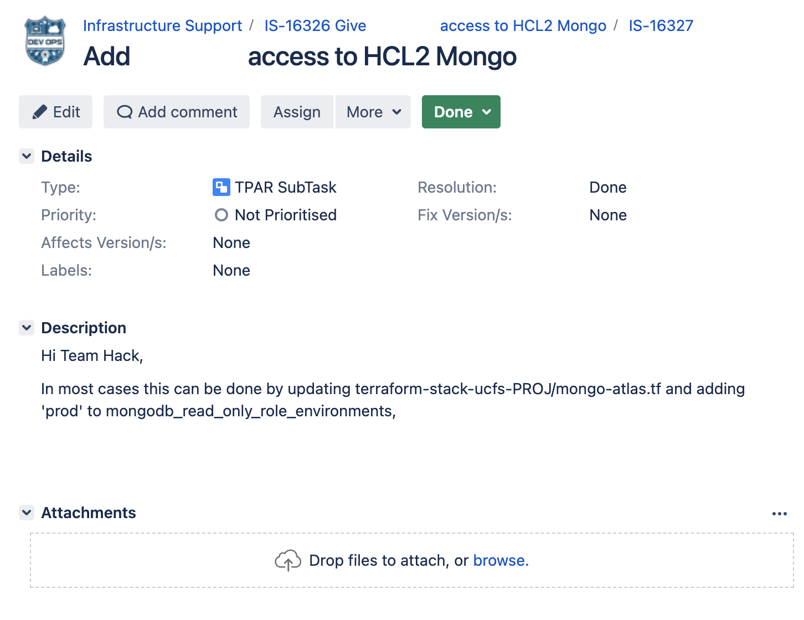

Introduction
Date: 21 June 23
Article 25 of GDPR (Data protection by design and by default) requires that we “…implement appropriate technical and organisational measures for ensuring that, by default, only personal data which are necessary for each specific purpose”
For example, our databases are divided by project and environment (which are called different organisations in mongo) and within these “organisations” different users have different abilities.
Below you can see evidence of a ticket where I am granting temporary access to another organisation for a user who has sufficient security clearance and a clear use case for accessing this.
